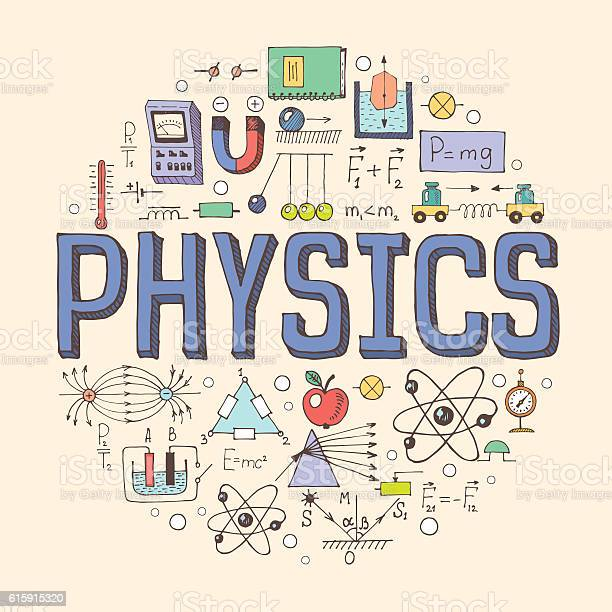

Physics

Back To Main
All information is from Britannica
Look there for more information.
- Introduction
- Mechanics
- The Study of Gravitation
- The Study of Heat, Thermodynamics, and Statistical Mechanics
Introduction
Physics, science that deals with the structure of matter and the interactions between the fundamental constituents of the observable universe. In the broadest sense, physics (from the Greek physikos) is concerned with all aspects of nature on both the macroscopic and submicroscopic levels. Its scope of study encompasses not only the behaviour of objects under the action of given forces but also the nature and origin of gravitational, electromagnetic, and nuclear force fields. Its ultimate objective is the formulation of a few comprehensive principles that bring together and explain all such disparate phenomena.
Physics is the basic physical science. Until rather recent times physics and natural philosophy were used interchangeably for the science whose aim is the discovery and formulation of the fundamental laws of nature. As the modern sciences developed and became increasingly specialized, physics came to denote that part of physical science not included in astronomy, chemistry, geology, and engineering. Physics plays an important role in all the natural sciences, however, and all such fields have branches in which physical laws and measurements receive special emphasis, bearing such names as astrophysics, geophysics, biophysics, and even psychophysics. Physics can, at base, be defined as the science of matter, motion, and energy. Its laws are typically expressed with economy and precision in the language of mathematics.
Both experiment, the observation of phenomena under conditions that are controlled as precisely as possible, and theory, the formulation of a unified conceptual framework, play essential and complementary roles in the advancement of physics. Physical experiments result in measurements, which are compared with the outcome predicted by theory. A theory that reliably predicts the results of experiments to which it is applicable is said to embody a law of physics. However, a law is always subject to modification, replacement, or restriction to a more limited domain, if a later experiment makes it necessary.
The ultimate aim of physics is to find a unified set of laws governing matter, motion, and energy at small (microscopic) subatomic distances, at the human (macroscopic) scale of everyday life, and out to the largest distances (e.g., those on the extragalactic scale). This ambitious goal has been realized to a notable extent. Although a completely unified theory of physical phenomena has not yet been achieved (and possibly never will be), a remarkably small set of fundamental physical laws appears able to account for all known phenomena. The body of physics developed up to about the turn of the 20th century, known as classical physics, can largely account for the motions of macroscopic objects that move slowly with respect to the speed of light and for such phenomena as heat, sound, electricity, magnetism, and light. The modern developments of relativity and quantum mechanics modify these laws insofar as they apply to higher speeds, very massive objects, and to the tiny elementary constituents of matter, such as electrons, protons, and neutrons.
Mechanics
Mechanics is generally taken to mean the study of the motion of objects (or their lack of motion) under the action of given forces. Classical mechanics is sometimes considered a branch of applied mathematics. It consists of kinematics, the description of motion, and dynamics, the study of the action of forces in producing either motion or static equilibrium (the latter constituting the science of statics). The 20th-century subjects of quantum mechanics, crucial to treating the structure of matter, subatomic particles, superfluidity, superconductivity, neutron stars, and other major phenomena, and relativistic mechanics, important when speeds approach that of light, are forms of mechanics that will be discussed later in this section.
In classical mechanics the laws are initially formulated for point particles in which the dimensions, shapes, and other intrinsic properties of bodies are ignored. Thus in the first approximation even objects as large as Earth and the Sun are treated as pointlike—e.g., in calculating planetary orbital motion. In rigid-body dynamics, the extension of bodies and their mass distributions are considered as well, but they are imagined to be incapable of deformation. The mechanics of deformable solids is elasticity; hydrostatics and hydrodynamics treat, respectively, fluids at rest and in motion.
The three laws of motion set forth by Isaac Newton form the foundation of classical mechanics, together with the recognition that forces are directed quantities (vectors) and combine accordingly. The first law, also called the law of inertia, states that, unless acted upon by an external force, an object at rest remains at rest, or if in motion, it continues to move in a straight line with constant speed. Uniform motion therefore does not require a cause. Accordingly, mechanics concentrates not on motion as such but on the change in the state of motion of an object that results from the net force acting upon it. Newton’s second law equates the net force on an object to the rate of change of its momentum, the latter being the product of the mass of a body and its velocity. Newton’s third law, that of action and reaction, states that when two particles interact, the forces each exerts on the other are equal in magnitude and opposite in direction. Taken together, these mechanical laws in principle permit the determination of the future motions of a set of particles, providing their state of motion is known at some instant, as well as the forces that act between them and upon them from the outside. From this deterministic character of the laws of classical mechanics, profound (and probably incorrect) philosophical conclusions have been drawn in the past and even applied to human history.
Lying at the most basic level of physics, the laws of mechanics are characterized by certain symmetry properties, as exemplified in the aforementioned symmetry between action and reaction forces. Other symmetries, such as the invariance (i.e., unchanging form) of the laws under reflections and rotations carried out in space, reversal of time, or transformation to a different part of space or to a different epoch of time, are present both in classical mechanics and in relativistic mechanics, and with certain restrictions, also in quantum mechanics. The symmetry properties of the theory can be shown to have as mathematical consequences basic principles known as conservation laws, which assert the constancy in time of the values of certain physical quantities under prescribed conditions. The conserved quantities are the most important ones in physics; included among them are mass and energy (in relativity theory, mass and energy are equivalent and are conserved together), momentum, angular momentum, and electric charge.
The Study of Gravitation
This field of inquiry has in the past been placed within classical mechanics for historical reasons, because both fields were brought to a high state of perfection by Newton and also because of its universal character. Newton’s gravitational law states that every material particle in the universe attracts every other one with a force that acts along the line joining them and whose strength is directly proportional to the product of their masses and inversely proportional to the square of their separation. Newton’s detailed accounting for the orbits of the planets and the Moon, as well as for such subtle gravitational effects as the tides and the precession of the equinoxes (a slow cyclical change in direction of Earth’s axis of rotation), through this fundamental force was the first triumph of classical mechanics. No further principles are required to understand the principal aspects of rocketry and space flight (although, of course, a formidable technology is needed to carry them out).
The modern theory of gravitation was formulated by Albert Einstein and is called the general theory of relativity. From the long-known equality of the quantity “mass” in Newton’s second law of motion and that in his gravitational law, Einstein was struck by the fact that acceleration can locally annul a gravitational force (as occurs in the so-called weightlessness of astronauts in an Earth-orbiting spacecraft) and was led thereby to the concept of curved space-time. Completed in 1915, the theory was valued for many years mainly for its mathematical beauty and for correctly predicting a small number of phenomena, such as the gravitational bending of light around a massive object. Only in recent years, however, has it become a vital subject for both theoretical and experimental research. (Relativistic mechanics refers to Einstein’s special theory of relativity, which is not a theory of gravitation.)
The Study of Heat, Thermodynamics, and Statistical Mechanics
Heat is a form of internal energy associated with the random motion of the molecular constituents of matter or with radiation. Temperature is an average of a part of the internal energy present in a body (it does not include the energy of molecular binding or of molecular rotation). The lowest possible energy state of a substance is defined as the absolute zero (−273.15 °C, or −459.67 °F) of temperature. An isolated body eventually reaches uniform temperature, a state known as thermal equilibrium, as do two or more bodies placed in contact. The formal study of states of matter at (or near) thermal equilibrium is called thermodynamics; it is capable of analyzing a large variety of thermal systems without considering their detailed microstructures.
First Law
The first law of thermodynamics is the energy conservation principle of mechanics (i.e., for all changes in an isolated system, the energy remains constant) generalized to include heat.
Second Law
The second law of thermodynamics asserts that heat will not flow from a place of lower temperature to one where it is higher without the intervention of an external device (e.g., a refrigerator). The concept of entropy involves the measurement of the state of disorder of the particles making up a system. For example, if tossing a coin many times results in a random-appearing sequence of heads and tails, the result has a higher entropy than if heads and tails tend to appear in clusters. Another formulation of the second law is that the entropy of an isolated system never decreases with time.
Third Law
The third law of thermodynamics states that the entropy at the absolute zero of temperature is zero, corresponding to the most ordered possible state.
Statistical Mechanics
The science of statistical mechanics derives bulk properties of systems from the mechanical properties of their molecular constituents, assuming molecular chaos and applying the laws of probability. Regarding each possible configuration of the particles as equally likely, the chaotic state (the state of maximum entropy) is so enormously more likely than ordered states that an isolated system will evolve to it, as stated in the second law of thermodynamics. Such reasoning, placed in mathematically precise form, is typical of statistical mechanics, which is capable of deriving the laws of thermodynamics but goes beyond them in describing fluctuations (i.e., temporary departures) from the thermodynamic laws that describe only average behaviour. An example of a fluctuation phenomenon is the random motion of small particles suspended in a fluid, known as Brownian motion.
Quantum statistical mechanics plays a major role in many other modern fields of science, as, for example, in plasma physics (the study of fully ionized gases), in solid-state physics, and in the study of stellar structure. From a microscopic point of view the laws of thermodynamics imply that, whereas the total quantity of energy of any isolated system is constant, what might be called the quality of this energy is degraded as the system moves inexorably, through the operation of the laws of chance, to states of increasing disorder until it finally reaches the state of maximum disorder (maximum entropy), in which all parts of the system are at the same temperature, and none of the state’s energy may be usefully employed. When applied to the universe as a whole, considered as an isolated system, this ultimate chaotic condition has been called the “heat death.”